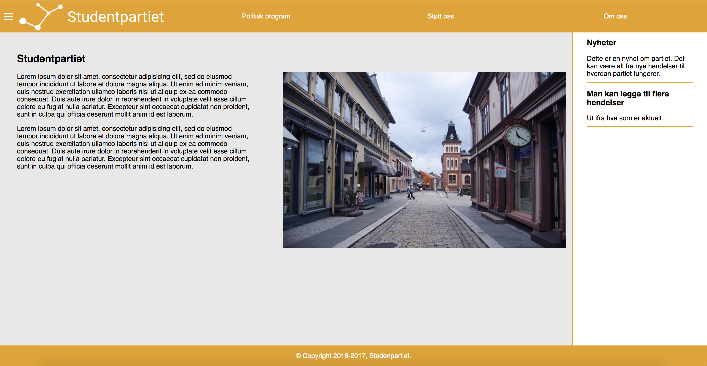
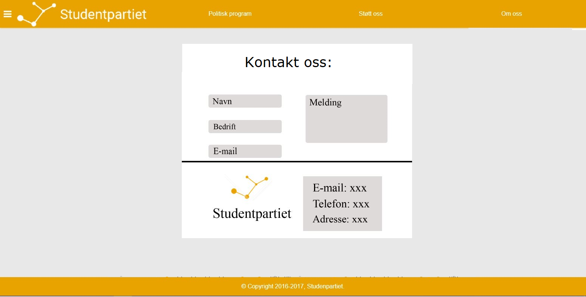
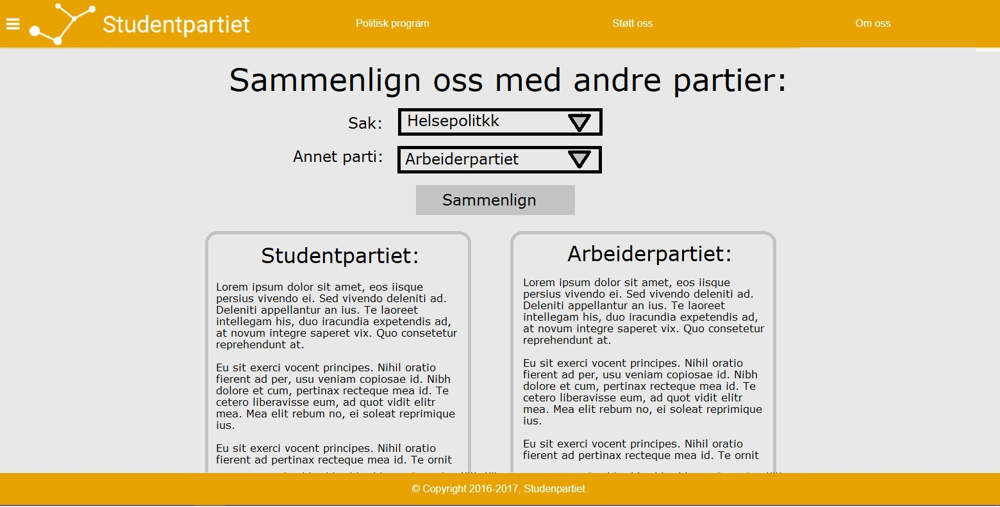
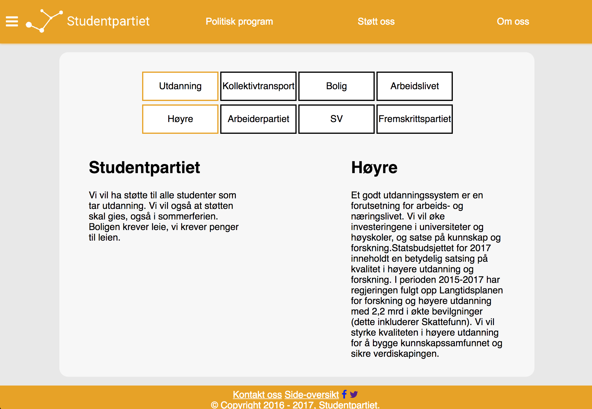
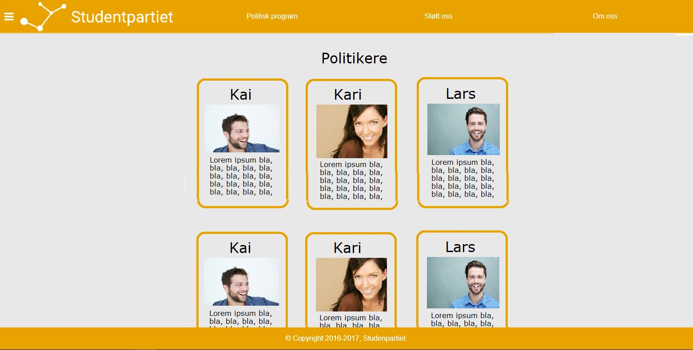
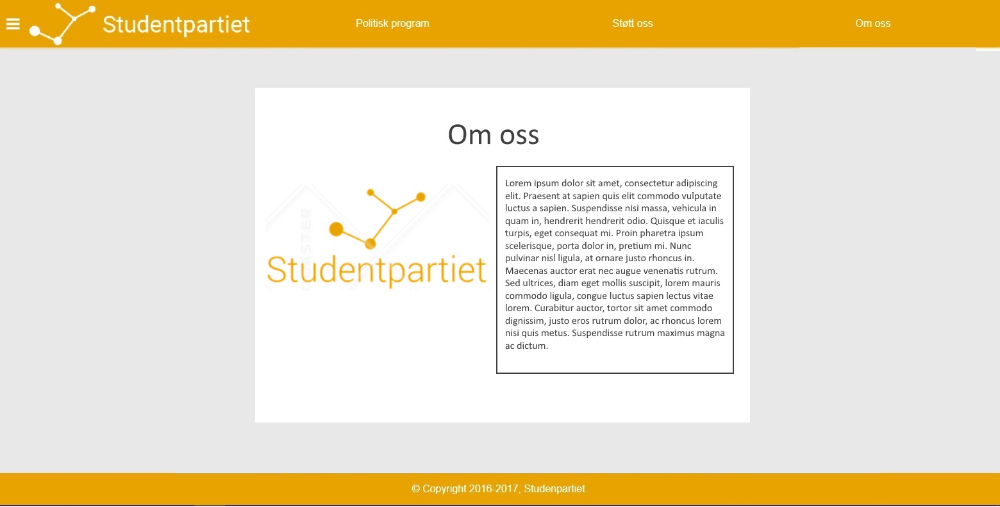

Project Changes
Ole Fredrik Borgundvåg Berg, Olav Håberg Dimmen, Kasper Maagerø Svendsen, Andreas Jensen Jonassen and Liam Svanåsbakken Crouch
28.10.2017
Link to frontpageChanges in design
-
Front page:
The page design is edited here because of aesthetics. The old design was very uninteresting, with a lot of text.
The new design with icons and tiles for each of our political goals is thought to make the goals more apparent.
We took the information in a div, because we use similar design on other pages and wanted to universalize. Furthermore, the div makes a clear contrast between the content and the background.
We also decided to have a button to link to the political program because, an ordinary link is somewhat boring and unmordern to have on the frontpage.
Old design:
New design:

-
Contact page
There are few changes to the design on this page.
We decided to take the have labels instead of placeholder for the input-fields, because then you may read what the field is for even when you are writing in that field.
We also have no social media icons in the center of the page, because we think the icons on the bottom on the page is enough.
Old design:
New design:

-
Political program
The page contain Studentpartiet's political views and a way to compare those views to that of other political parties.
We decided we wanted to give the users of the page a better experience by making it easier to update the political program page. We wanted a user to be able to update the page with only one click.
There are a few changes in this design, you now click on a party/case to choose what the page will desplay, instead of the drop down menu.
The old design:
The new design:
 -
Our politicians
The page contains pictures and a short summary of Studentpartiet's politicians.
Instead of focusing on personal stories, we chose to show the politicians motivations, what they themselves would want to accomplish within studentpartiet, and why.
The page contains links to "blank" accounts on social media, both so that people can get better acquainted with the party's politicians and so that people can get the latest news from their politicians and ask them questions if they have any.
The design is going made up of n objects, where each object contains one politicians name and a small paragraph they wrote themselves.
The "tile" design makes it so that none of the politicians draw a larger graphical appeal than the others. The page should inform the user, not make choices for them.
Old design:
New design:


-
About page
The page contains som basic information about the party.
As Studentpartiet is a brand new and mostly unknown party, this page is important, as the public would like some basic information about the party to understand it's history and it's goals.
Another purpose of this page is to make it clear to people that this is a serious party, when people haven't heard of it before.
The design is simple, as this is just a brief overview of the party. The page has little text, so the visitors won't be overwhelmed with information.
The design is simply a textbox with some information, and a picture of our logo next to it.
Old design:
New design:

-
History page
Animations were disabled on mobile for performance reasons, as well as scroll events being propagated weirdly on mobile devices.
-
Supporting page
The page contains a way to donate to the party and a way to become a member of the party.
The page does not contain information about upcoming events, as we have this information in the index page. The webpage would be messy and not user-friendly.
The purpose of this site is for supporters of the party to find way to help the party. It is also to promote activism among students, by helping them joining the party.
Old design:

New design:


-
Site map
As there isn't much of a hierarchy to the website
How we fulfilled our JS minimum requirements
-
Ole Fredrik:
He made the dynamic picture gallery on the front page using HTML5 canvas and JavaScript.
Who is responsible for each file
-
index.html:
Ole Fredrik made the content on the site, and the general template was made by Kasper and Andreas.
-
navigation.js:
Andreas Jensen Jonassen wrote this whole file.
-
galleri.js:
Ole Fredrik wrote this whole file.
-
kontakt.html:
Ole Fredrik made the content on this site, and the general template was made by Kasper and Andreas.
-
program.js:
Kasper wrote this whole file.
How modularity was handled:
-
Stylesheet:
All the pages uses the shared stylesheet stylesheet.css.
-
Navigation bar:
All the pages uses the shared JS-file navigation.js for navigation bar.